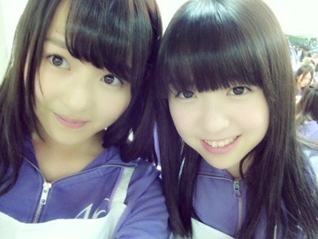
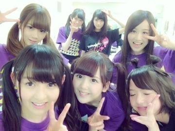

| 2014/06 08 Sun | 植物の声。576回目 |
総選挙、生駒14位！
中継見ていました。
発狂した！
生駒が欠席した公演の一幕で
隣にいなかったのが
少し寂しかったですが、
今日いつも通りの生駒がいて
とても安心しました。
がんばれ、がんばれ！
玲奈さん、
5位本当におめでとうございます！
プリンシパルの期間
少しお話できました。
またお話したいです^^

プリンシパル、
いよいよ後半戦に突入しました！
今までやったのは
パム
ルイーダ
ポリン姫
キャサリン
ベル
の5役です。
侍女にはなってません。
なかなか厳しい。
日々、笑いの難しさを実感してます。
二幕はずっと稽古してきたから
もちろんできるけど、
一幕はやはり難しいです。
どんなに二幕の役ができても
一幕を越えなければ
三幕のミニライブまでお預けです。
でも、二幕出られなくても
三幕のミニライブ
後ろの列で

二幕に出られない分発散してる！
たったの2曲で汗だらだらだよ。
今日の昼公演では
立候補したベルに選ばれました！
みり愛がポリン姫！
可愛らしい姫でした...
一緒に出ようねって約束してたの。
みり愛にとっての千秋楽に
約束守れてよかった！
夜公演はエルザを
リベンジしたのですが
落ちてしまいました...
またリベンジしたいです。
三幕のミニライブですが、
なぁちゃんが体調不良で
欠席だったため、
気づいたら片想い
ロマンスのスタート
2曲ともアンダーを務めました。
早く体調良くなりますように、
ねねも復活しますように...
ミニライブでのMC中
発表がありました
アンダーライブ、追加公演決定！
有難いことにたくさんの応募が
あったと耳にしました。
■7月25日（金）
開場17:00 開演18:00
■7月26日（土）
①開場11:00 開演12:00
②開場16:00 開演17:00
渋谷AiiAシアター
指定 5,000円(税込)
開場17:00 開演18:00
■7月26日（土）
①開場11:00 開演12:00
②開場16:00 開演17:00
渋谷AiiAシアター
指定 5,000円(税込)
3公演追加！
よろしくお願いします！
そして、お知らせがもうひとつ...
以前表紙イラストを担当した
熊坂出さんのウェブ小説。
第2弾も担当させていただきました！
嬉しい嬉しい
短編小説『さらばアンサツシャ』
ぜひ、読んで、見てください！

まりか
コメント(561)
2014/06/08 23:42